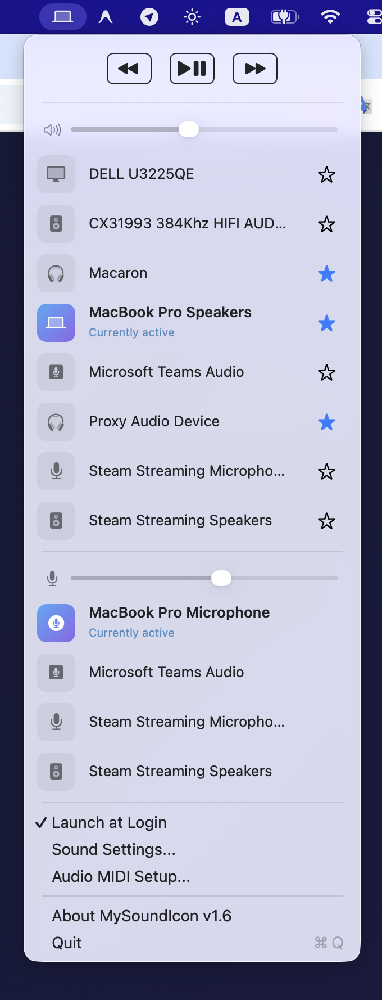
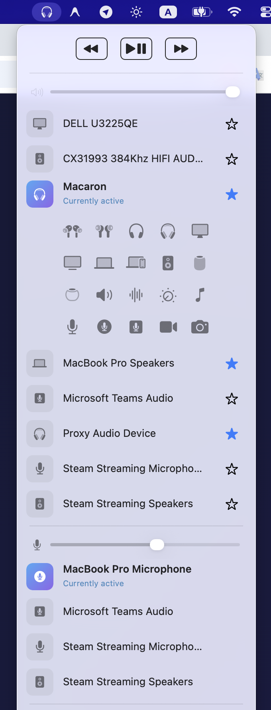
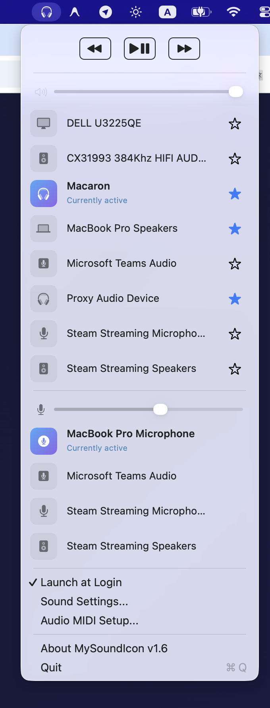
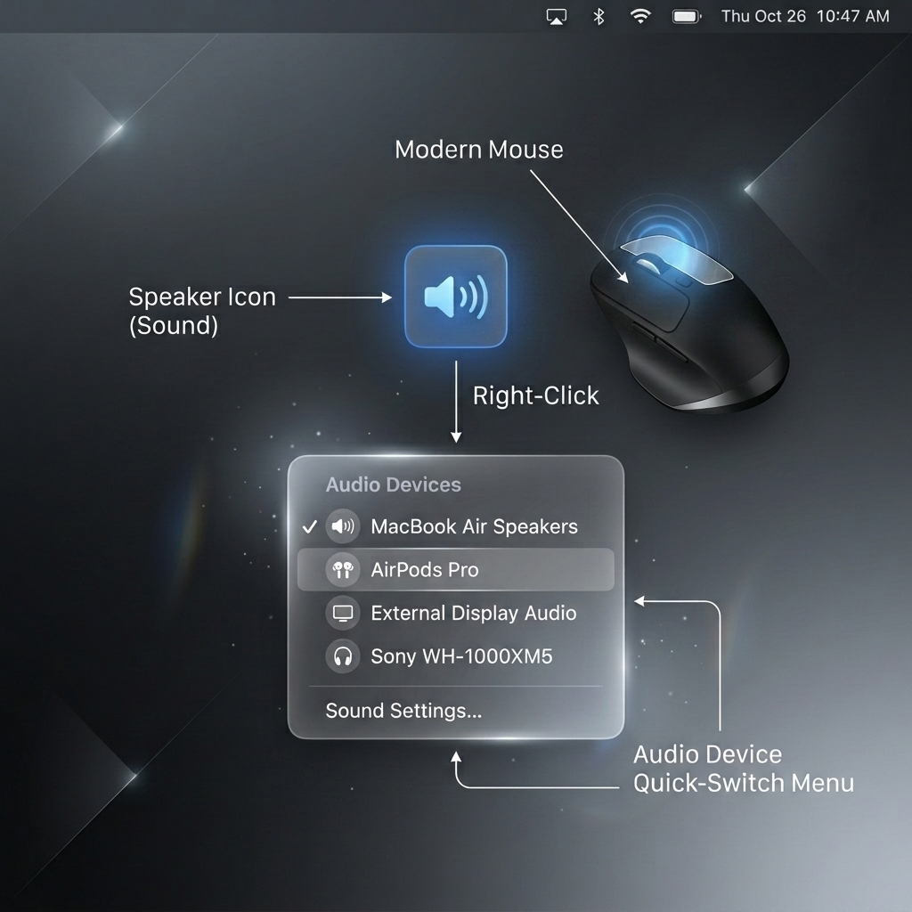
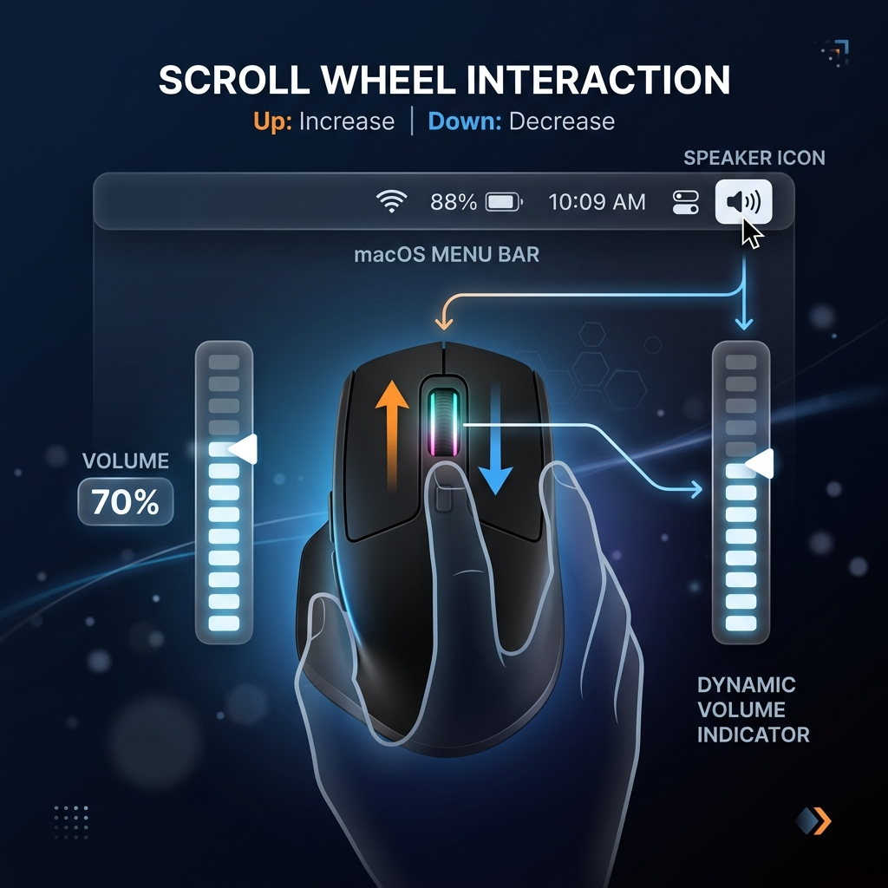
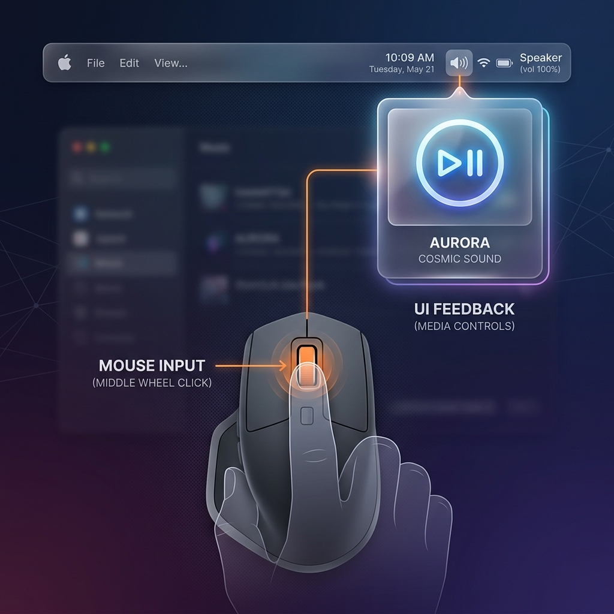

Take Control of Your Audio Device Icons
Easily manage input and output audio devices, intercept media keys, volume controls with a beautiful UI
Download for macOS
Choose output
Quickly switch between your favorite output devices

Customizable icon
Choose icon for your output device

Star device
Quickly switch between your favorite audio devices by right click

Right Click
Quickly cycle through your starred audio output devices without opening the menu.

Mouse Wheel
Change volume instantly by scrolling up or down over the tray icon.

Middle Click
Play or pause your current media with a simple middle click on the tray icon.
Smart Quick-Switch
Star your favorite headphones and speakers. Simply right-click the tray icon to instantly cycle through them without opening a menu.
Customizable Icons
Assign unique Apple SF Symbols to every audio device you own so you can recognize your active output at a glance.
Built-in Media Controls
Play, pause, and skip tracks seamlessly straight from your menu bar using native macOS media event integration.